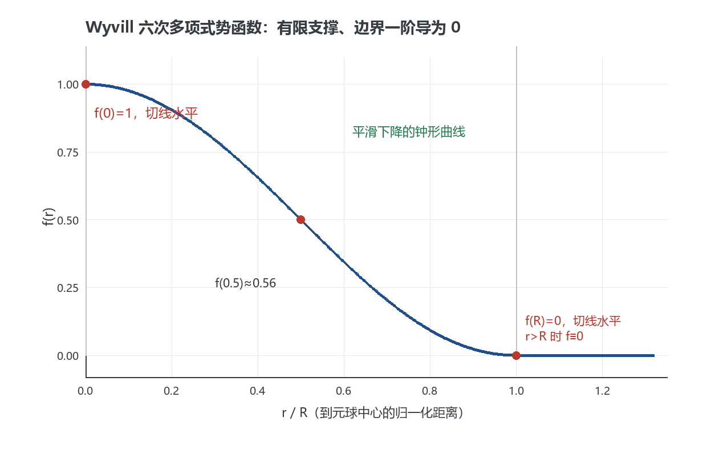

Course / Article
- 章节
- 1,429 字
- 2026.11.15
- 3 个小节
第十二部分 隐式曲面与元球自动拟合
下载 PDF离线 / 打印版
11.1 隐式曲面表示的优缺点
隐式曲面（implicit surface）：用方程
表示曲面——曲面是标量场的等值面，而不是由参数 (u,v) 直接给出的点集。元球、RBF 曲面、SDF、水平集（level set）都是隐式表示。
优点：
| 优点 | 说明 |
|---|---|
| 表示紧凑 | 只需一个函数/少量参数（如若干元球），与几何复杂度无关 |
| 天然光滑 | 用光滑基函数构造，曲面自动 C¹/C² 连续，无接缝 |
| 易做融合/布尔 | 两个场的 min/max/加权和即得并、交、差、平滑融合（blending），拓扑自动变化 |
| 拓扑自由 | 合并、分裂、穿孔都自动发生，不需重新网格化 |
| 内外判定容易 | F 的符号直接给出"在内部/外部"，碰撞检测、CSG、体渲染都方便 |
| 求交/光线追踪方便 | 沿射线做 step/raymarching 即可求交，适合体渲染 |
| 分辨率无关（数学上） | 表示本身没有分辨率，可按需采样到任意精度 |
| 适合扫描数据/医学 | 距离场、点云重建、CT/MRI 数据天然是场 |
缺点：
| 缺点 | 说明 |
|---|---|
| 难以精确控制形状 | 要"做出某个具体形状"很难，通常要靠拟合/优化；尖角、硬边几乎无法直接表示 |
| 需要多边形化才能渲染/交互 | 必须用 Marching Cubes 等提取网格（有分辨率误差、块状伪影、面片数大） |
| 纹理/参数化困难 | 没有天然的 (u,v) 参数，贴图需要额外投影/参数化 |
| 局部修改影响全局/计算量大 | 场是叠加的（尤其 RBF 全支撑），改一处影响一片；每帧采样 + 等值面提取开销大 |
| 细节与薄壁易丢失 | 低分辨率采样会"糊掉"薄片、小孔，甚至填平缝隙 |
| 距离/体积不精确 | 线性插值两个场会导致表面偏移、体积变化 |
11.2 Muraki 提出的元球自动拟合法中的三种能量函数
背景：Muraki（1991）提出用"Blobby 模型"（元球/隐式曲面）自动描述距离数据（range data / 点云）——给定扫描得到的三维点集与法向，自动求出一组元球（位置、半径/强度），使其等值面逼近数据表面。这本质上是一个非线性最小二乘拟合问题，需要定义能量（误差）函数。
三种能量函数（大纲要求，务必记名称与含义）：
| 能量 | 名称 | 作用 | 典型形式 |
|---|---|---|---|
| ① | 位置能量（position energy） | 让曲面经过数据点：数据点上的场值应等于等值面阈值（即 F=T 或 F=0） | |
| ② | 法向能量（normal energy） | 让曲面的法向与数据法向一致：场的梯度方向应与测得的法向平行 | |
| ③ | 收缩能量（shrinkage energy） | 防止元球无限膨胀/重叠、抑制多余元球，使模型紧凑、曲面不"鼓包" | 与元球半径/强度有关，例如 |
优化：总能量 E = E_pos + λ₁E_norm + λ₂E_shrink，用梯度下降/Levenberg–Marquardt 等非线性优化求解元球参数（位置、半径、强度）；并按需增加/删除/分裂元球（模型选择），直到拟合误差满足要求。
三种能量各自解决什么：位置能量解决"曲面在哪里"，法向能量解决"曲面朝哪边/局部形状对不对"，收缩能量解决"不要用一堆过大的球把形状糊成一团"（正则化/避免过拟合）。
11.3 Wyvill 的六次多项式势函数（公式与图形形状）
提出：Wyvill, McPheeters, Wyvill（1986），"Data Structure for Soft Objects"，用于软体（soft objects）/元球的势场。
公式：设元球半径为 R，距离 r = ‖x − c‖，则
关键性质（也是"形状"的数学描述）：
- f(0) = 1（中心处最大值），f(R) = 0（边界处为 0）：
- f′(0) = 0，f′(R) = 0：中心与边界处切线水平，即函数在边界处导数为 0，与"外部恒为 0"的常数函数光滑拼接（C¹ 连续）——这是元球融合处平滑无硬边的关键；
- 在 [0, R] 上单调递减、单峰（只取非负值），曲线像"钟形/半抛物线的倒扣"：中心附近平缓、中段下降最快、接近 R 时又趋于平缓；
- 有限支撑（finite support）：r > R 时严格为 0，所以一个元球只影响其半径内的空间（局部性、可并行、可空间划分加速）；
- 六次多项式：只需乘加即可快速求值（无开方、无指数），且二阶连续可导（C²），融合效果平滑。
图形形状描述（答题可画）：以 r/R 为横轴（0→1），f 为纵轴（1→0）： - r/R = 0 时 f = 1，切线水平； - r/R ≈ 0.5 时 f ≈ 0.44（快速下降段）； - r/R = 1 时 f = 0，切线水平； - r/R > 1 时 f ≡ 0。 整条曲线呈平滑的下降"S"形/钟形，在两端都"贴平"。
部分数值（便于画图与检验）：
| r/R | 0 | 0.2 | 0.4 | 0.5 | 0.6 | 0.8 | 1.0 |
|---|---|---|---|---|---|---|---|
| f | 1.000 | 0.897 | 0.693 | 0.563 | 0.424 | 0.165 | 0.000 |

与其他势函数对比：
| 势函数 | 公式 | 特点 |
|---|---|---|
| Wyvill 六次 | 见上 | 有限支撑、C¹ 边界、无开方、计算快，最常用 |
| (1−r²)³ | 同为六次、有限支撑，形式更简单（Blinn/metaball 常用） | |
| Blinn 指数/高斯 | 无限支撑（需截断）、更"软"、计算贵 |
考点：写出 Wyvill 六次多项式；说明 f(0)=1、f(R)=0、f′(R)=0 的意义（平滑融合、有限支撑）；画出曲线形状；说出"六次"是因为需要在边界处一阶导为零（更高次也可，但六次是刚好够用的最低次之一）。